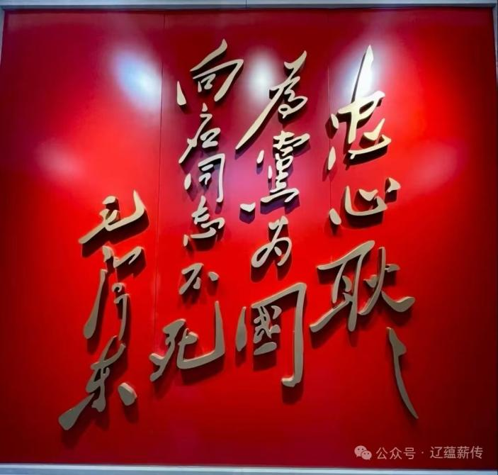

关向应纪念馆，位于关向应同志故居——大连市金州区向应镇关家村。始建于1986年，由当时的金县人民政府兴建。1989年7月，原国家副主席王震为纪念馆题写了馆名。2002年在关向应诞辰100周年之际重建新馆，2006年进一步改扩建，2007年9月10日重新开馆。总占地面积6万平方米，主要包括关向应故居遗址（两间草房、农家小院）、纪念馆、广场、绿地等。纪念馆中陈列了大量的珍贵历史资料和实物，形象生动地记述了关向应同志光辉的一生。
关向应，原名关致祥，1902年9月10日出生在一个普通满族民农民家庭。是我国老一辈无产阶级革命家、中国工农红军和八路军的高级指挥员，政治工作领导者。曾担任团中央书记，中共中央军事委员会书记，红三军政委，红二方面军政委等。他为中国人民的解放事业呕心沥血，鞠躬尽瘁，建立了不朽的功勋。
毛泽东同志曾为他题词：“忠心耿耿，为党为国，向应同志不死”。
 ← 返回大连地图